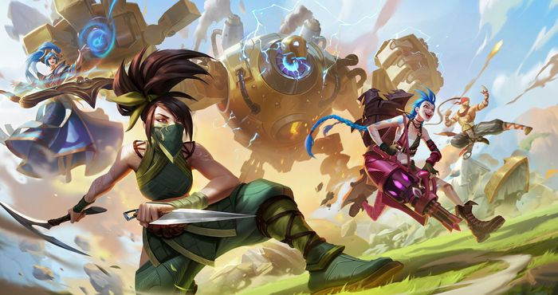

¡Bienvenidos a Leaguepedia!
En esta página te enseñaremos un poco de la dinamica del juego League of Legends. También te ofrecemos unos cursos personalizables para que vayas practicando y mejorando en el juego.
League of Legends (abreviado como LoL) es un videojuego de estrategia en tiempo real y multijugador en línea, desarrollado y publicado por Riot Games en 2009. El juego se centra en dos equipos de cinco jugadores que compiten para destruir la base del otro equipo, llamada "nexo", ubicada en la esquina opuesta del mapa.
Cada jugador elige un personaje (conocido como "campeón") que posee habilidades y roles únicos. Los personajes se agrupan en diferentes clases, como tanques, luchadores, magos, tiradores y soportes, cada uno con un conjunto diferente de habilidades y roles en el equipo.
Durante el juego, los jugadores trabajan juntos para recolectar oro y experiencia, subir de nivel, mejorar sus habilidades y equipo, y luchar contra los campeones del otro equipo. A medida que el juego avanza, los jugadores también deben navegar a través de diferentes áreas del mapa, conocidas como "calles", para avanzar hacia la base enemiga y ganar el juego.
Además de su jugabilidad, League of Legends es conocido por su comunidad de jugadores, torneos competitivos y escena de deportes electrónicos en constante crecimiento. El juego ha sido uno de los más populares y exitosos en el género de los juegos de estrategia en tiempo real, y ha acumulado una base de jugadores muy activa y dedicada en todo el mundo.
¡Ahora que ya sabes más!
Contrata nuestros servicios para saber más acerca del juego y poder practicar todas las técnicas que vayas aprendiendo, ¡¡Esperamos que te vaya bien con nuestros servicios!!
